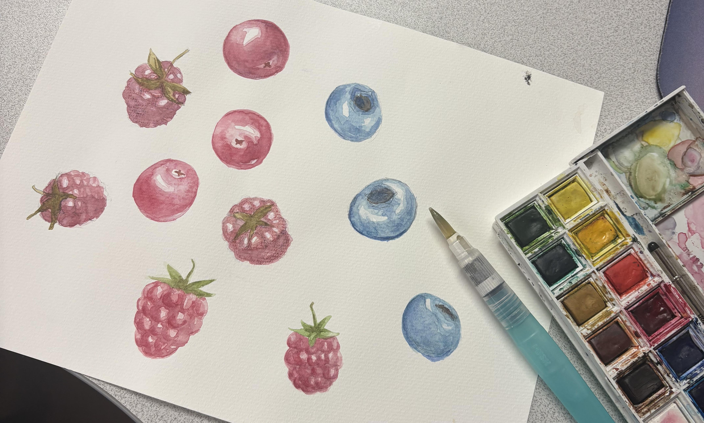
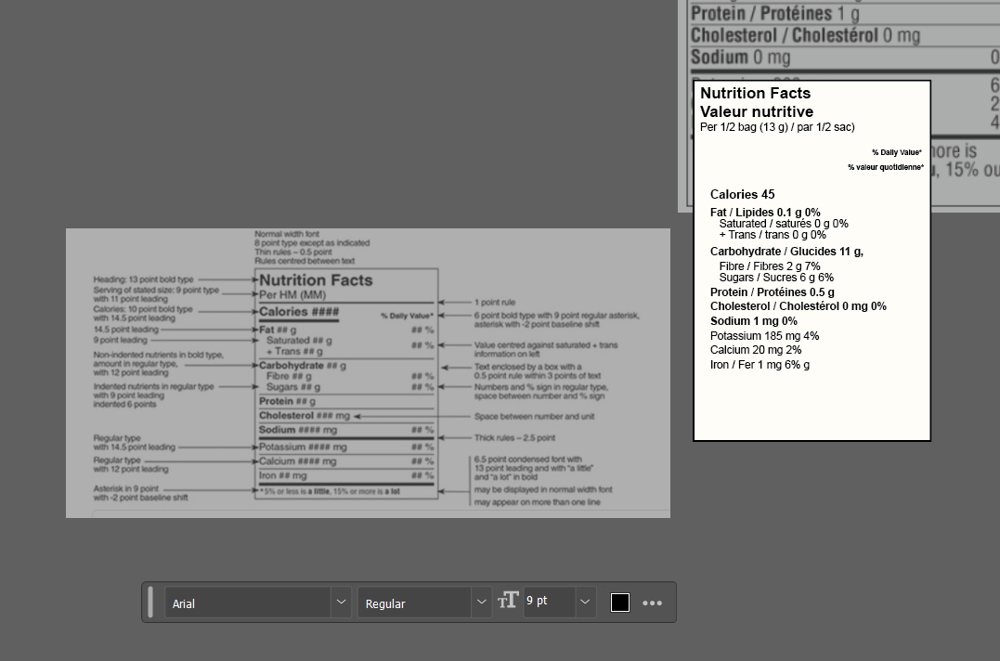
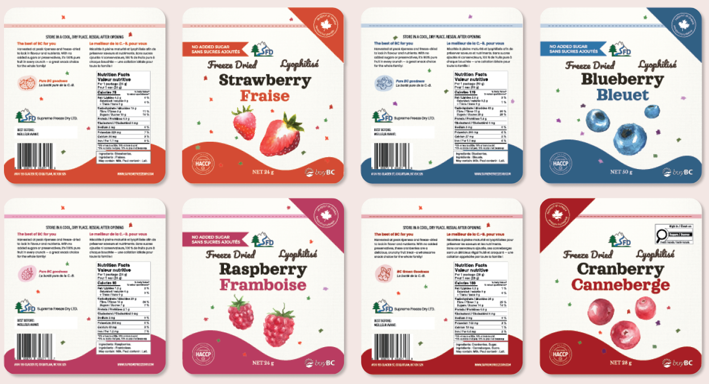

Retail Product Line Expansion
Scaling a brand system through technical research and regulatory compliance.
Project Overview
Following the successful launch of the initial product line, I developed four additional retail packages to expand the brand’s market presence. A primary objective was maintaining visual cohesion with the original SKU line while navigating the newly implemented CFIA regulations regarding Front-of-Package (FOP) nutrition symbols, which became mandatory for all packaging produced after January 1, 2026.
Beyond the creative direction, the scope of this expansion required intensive technical research to determine which products triggered these new federal labeling requirements. This process involved conducting pre-packing trials to establish optimal net weights and auditing ingredient data against new health standards. The final result is a product family that balances artisanal brand aesthetics with strict, up-to-date regulatory compliance for national retail distribution.
Process & Execution
The creative process began with custom hand-painted illustrations for each of the four new flavor profiles. I developed these unique visual assets to ensure the artisanal feel of the brand remained consistent across the expanded line. Once the artwork was finalized, I used Photoshop for digital refinement and Figma for initial layout prototyping.

Custom hand-painted illustrations for the expanded product line.
On the technical side, I was responsible for transforming raw data from lab-tested nutritional results into CFIA-compliant Nutrition Facts Tables. This required precise attention to detail to ensure that every value, font size, and bilingual requirement met strict federal layout standards.

Development of the bilingual CFIA-compliant Nutrition Facts Tables.
By managing the transition from physical artwork to technical data entry and final Illustrator production files, I ensured that each package was both a beautiful brand asset and a legally sound retail product for the 2026 market.
Technical Challenge: CFIA & FOP Symbols
The primary challenge was navigating the new 2026 CFIA Front-of-Package (FOP) mandatory labeling rules. I conducted extensive research to determine which products required the new magnifying glass symbol.
Through careful analysis of lab results and ingredient lists, I identified that three of the four products were exempt due to their natural, no-sugar-added status, while one required a specific FOP label. Successfully integrating this symbol without compromising the clean brand aesthetic required strategic layout adjustments on the front panel.
Impact & Outcome

Final production-ready files with integrated CFIA-compliant labeling.
The resulting packaging is now production-ready and fully compliant with the latest Canadian labeling laws. By managing both the creative and the rigorous regulatory requirements, I delivered a product line that is not only visually striking but legally protected for national distribution.